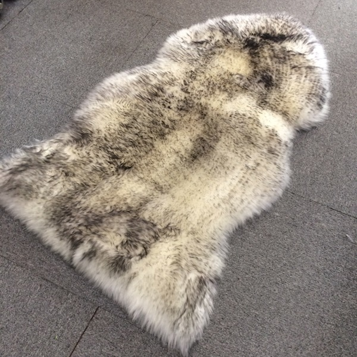

Sheepskin Boot Liners Pair | Genuine Merino Wool Boot Inserts
$39.99
Step Into Natural Comfort
Upgrade your boots with genuine Australian sheepskin boot liners. Premium merino wool naturally wicks moisture and regulates temperature - warm when cold, cool when hot. Dense wool fibers provide excellent cushioning and natural odor control for all-day comfort.
Specifications
- Material: 100% Australian Merino Wool
- Wool Length: Medium Wool (20-30mm)
- Size: One size (trim to fit)
- Origin: Australian Made
- Features: Pair included, Moisture-wicking, Odor controlling
Keywords
sheepskin boot liners, merino wool boot inserts, leather boot wool liner, moisture-wicking boot insole, winter boot liner, genuine sheepskin boot pad